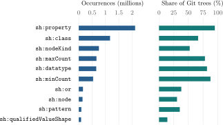

SHACL en Forme
SHACL Usage in the Wild
- Author:
- Erdem Önal
- Project:
- GitHub
- Permanent identifier:
- https://w3id.org/shacl-en-forme
- Dataset:
- Statistics (JSON-LD)
- Vocabulary:
- RDF Vocabulary (Turtle)
Section 1 introduces the dataset and describes how shapes are distributed across Git trees, how they use ontology terms, how often their constraints can be satisfied together, and how complex they are.
Section 2 describes shapes, targets, property paths, and shape characteristics. Section 3 presents occurrence counts and Git tree prevalence for the 33 SHACL Core constraint parameters. Section 4 describes how SHACL documents use SPARQL to define constraints and reusable constraint components.
SHACL en Forme presents statistics on how the Shapes Constraint Language (SHACL) is used in public GitHub repositories. The dataset reflects repository contents as of 11 October 2026.
SHACL en Forme is an independent research resource and is not endorsed by the World Wide Web Consortium (W3C). The SHACL 1.0 Recommendation defines the language, its syntax, and its validation procedures.
A Git tree represents a snapshot of repository contents. Multiple GitHub repositories may reference the same tree. The analysis uses distinct Git trees to avoid counting identical repository snapshots more than once.
Repository verification used parsed Resource Description Framework (RDF) graphs. A repository qualified if a graph contained a SHACL shape declaration, a Core target or constraint predicate, or a constraint written in the SPARQL Protocol and RDF Query Language (SPARQL) and attached to a shape through sh:sparql. After excluding forks and Git trees without extracted SHACL shape documents, the final dataset contains 3,675 repositories representing 3,657 distinct Git trees.
Among 550,508 files identified for RDF processing, 548,135 were successfully parsed.
A file is counted as a SHACL shape document if it contains at least one SHACL shape. Files containing only annotations or validation reports are not counted.
| Measurement | Count |
|---|---|
| Analyzed Git trees | 3,657 |
| Shape documents | 50,625 |
| Parsed RDF files | 548,135 |
The dataset contains 3,062,787 distinct shapes. Some were explicitly typed as sh:NodeShape or sh:PropertyShape. Others were identified from SHACL targets, constraints, or references from other shapes. Each shape with an Internationalized Resource Identifier (IRI) was counted once per Git tree. Each blank node was counted once per file.
| Share of trees | Git trees | Distinct shapes | Share of distinct shapes |
|---|---|---|---|
| Top 1% | 37 | 1,671,854 | 54.59% |
| Top 5% | 183 | 2,491,529 | 81.35% |
| Top 10% | 366 | 2,742,035 | 89.53% |
The 37 Git trees with the most shapes contain 54.59% of all shapes in the dataset.
A SHACL shape can refer to a class or property declared in the same RDF document or elsewhere.
SHACL shapes used 384,106 distinct IRIs as classes or properties. An IRI counts as a match if an explicit rdf:type declaration identifies it as a class or property consistent with its use in SHACL. For example, if a shape uses ex:Student with sh:targetClass, a declaration of ex:Student as owl:Class or rdfs:Class counts as a match. If the same IRI is used as both a class and a property, a declaration matching either role is sufficient.
The analysis looked for these declarations in Git trees where each IRI was used. To find external declarations, it looked up term IRIs over Hypertext Transfer Protocol (HTTP) and checked linked RDF documents and vocabulary files.
| Declaration source | Distinct IRIs | Share of IRIs |
|---|---|---|
| Same Git tree only | 184,491 | 48.03% |
| External RDF only | 44,854 | 11.68% |
| Both | 22,769 | 5.93% |
| Neither | 131,992 | 34.36% |
For 53.96% of the IRIs, a matching declaration was found in at least one Git tree where the IRI was used. External RDF provided matching declarations for a further 44,854 IRIs. In total, 252,114 IRIs had a matching declaration, or 65.64% of all IRIs considered.
Section 1.3.2 identified SHACL documents that used terms declared in other RDF documents. The comparison covered these document pairs as well as files containing both ontology statements and SHACL shapes. For each Web Ontology Language (OWL) restriction or RDF Schema (RDFS) range declaration, the analysis used the mappings in Astrea-KG to identify the corresponding SHACL constraint.
For an OWL restriction on a class, the SHACL shape had to target that class and use the property from the restriction as its path. For an rdfs:range declaration, the comparison used the property path regardless of the target class. A match required the corresponding SHACL constraint to contain every value derived for that comparison. For exact cardinality, a derived value counted as present only if the same property shape specified it as both sh:minCount and sh:maxCount.
# OWL restriction
ex:HenriFayolSeminar rdfs:subClassOf [
a owl:Restriction ;
owl:onProperty ex:startTime ;
owl:cardinality "1"^^xsd:nonNegativeInteger
] .
# Matching SHACL constraint
ex:SeminarShape a sh:NodeShape ;
sh:targetClass ex:HenriFayolSeminar ;
sh:property [
sh:path ex:startTime ;
sh:minCount 1 ;
sh:maxCount 1
] .
Each comparison pairs one constraint derived from an ontology with one SHACL document.
| OWL restriction or RDFS range | Corresponding SHACL constraint | Comparisons | Matches | Match rate |
|---|---|---|---|---|
owl:maxCardinality |
sh:maxCount |
68,005 | 61,071 | 89.8% |
owl:minCardinality |
sh:minCount |
9,757 | 7,069 | 72.5% |
owl:cardinality |
sh:minCount and sh:maxCount |
18,208 | 11,884 | 65.3% |
rdfs:range with a datatype |
sh:datatype |
215,995 | 152,158 | 70.4% |
rdfs:range with a class |
sh:class |
195,963 | 125,926 | 64.3% |
owl:allValuesFrom |
sh:class or sh:datatype |
14,291 | 12,067 | 84.4% |
owl:hasValue |
sh:hasValue |
1,388 | 1,242 | 89.5% |
The derived constraints matched the SHACL constraints in 371,417 of the 523,607 comparisons, or 70.9%. In 46,692 comparisons, the corresponding SHACL parameter had at least one value, but the derived value was not fully matched. In the remaining 105,498 comparisons, the relevant property was found, but the expected SHACL parameter had no value.
Most nonmatches resulted from a missing SHACL parameter rather than a different value. Among the 46,692 value differences, 44,706 compared two different single values. Most were found in the rdfs:range comparisons for sh:datatype and sh:class. In 6,324 exact cardinality comparisons, the required sh:minCount and sh:maxCount values were not found together on the same property shape. Another 80 comparisons had different minimum cardinalities. For example, owl:minCardinality 1 corresponded to sh:minCount 2. In another case, rdfs:range specified xsd:decimal, but sh:datatype specified xsd:double.
A shape is satisfiable if there is an RDF graph in which at least one node satisfies all its constraints.
ex:BuildingShape a sh:NodeShape ;
sh:targetNode ex:EmseCoursFauriel ;
sh:property [
sh:path ex:address ;
sh:minCount 2 ;
sh:maxCount 1
] .
This shape requires at least two distinct addresses for ex:EmseCoursFauriel but allows at most one. No node can satisfy both constraints.
The satisfiability check covered all constraints in two sections of SHACL 1.0, Cardinality Constraint Components and Other Constraint Components. It also covered sh:class and sh:nodeKind from Value Type Constraint Components, sh:equals and sh:disjoint from Property Pair Constraint Components, and sh:not, sh:and, and sh:or from Logical Constraint Components. From Shape-based Constraint Components, it covered sh:node, sh:property, sh:qualifiedValueShape, sh:qualifiedMinCount, and sh:qualifiedMaxCount.
The analysis included all seven forms of SHACL property paths. Each shape was analyzed together with the shapes it referenced. Shapes with the same constraint structure were counted once.
SHACL2FOL was chosen because it supports satisfiability checking without requiring a fixed RDF graph. The analysis used its translation to express the constraints of each shape and the shapes it referenced in first-order logic. If S(x) means that node x satisfies the shape, the following formula requires at least one such node to exist.
∃x S(x)
Vampire, a theorem prover supported by SHACL2FOL, was used to check the resulting theories for satisfiability. The table gives the results for 302,669 shapes.
| Result | Shapes | Share |
|---|---|---|
| Satisfiable | 293,848 | 97.09% |
| Unsatisfiable | 226 | 0.07% |
| No conclusive answer | 1,374 | 0.45% |
| Unsupported input | 6,642 | 2.19% |
| Tool error | 579 | 0.19% |
Some of the 226 shapes classified as unsatisfiable were deliberately written with conflicting constraints to test conflict detection. In 110 cases, the translation did not recognize a custom path predicate and applied sh:hasValue directly to the focus node, requiring it to match multiple distinct values at once. The analysis also treated five shapes marked sh:deactivated true as active and classified them as unsatisfiable. Three shapes had two sh:in values each. The SHACL 1.0 syntax rules allow at most one sh:in value per shape.
For the remaining 8,595 shapes, the analysis gave no definite answer. Among the 1,374 inconclusive runs, 285 ended without a decision, 294 timed out, and 795 produced output the software could not interpret. Unsupported input refers to shapes the software could not process, for example because it could not find a referenced shape or encountered a malformed RDF list. In 579 cases, an error interrupted execution. In 215 of those cases, the software encountered an RDF literal where it expected a property path. The remaining 364 errors involved numerical parsing and complex property path encoding.
Satisfiability is undecidable for full SHACL, but Satisfiability and Containment of Recursive SHACL identifies decidable fragments with known complexity bounds. A SHACL fragment is a restriction of the language that allows only certain features. These fragments are distinguished by eight prominent SHACL features, listed in the following table.
| Abbr. | Name | SHACL component |
|---|---|---|
| D | Property pair disjointness | sh:disjoint |
| E | Property pair equality | sh:equals |
| O | Property pair order | sh:lessThan, sh:lessThanOrEquals |
| C | Cardinality constraints | sh:qualifiedValueShape, sh:qualifiedMinCount, sh:qualifiedMaxCount |
| S | Sequence paths | SHACL list |
| Z | Zero-or-one paths | sh:zeroOrOnePath |
| A | Alternative paths | sh:alternativePath |
| T | Transitive paths | sh:zeroOrMorePath, sh:oneOrMorePath |
For example, the SZA fragment allows the base language together with sequence, zero-or-one, and alternative paths.
ex:ErdosConnectionShape a sh:NodeShape ;
sh:targetNode ex:AntoineZimmermann ;
sh:property [
sh:path ( ex:coauthor ex:coauthor ex:coauthor ) ;
sh:hasValue ex:PaulErdos
] .
This shape requires Antoine Zimmermann to be connected to Paul Erdős through three consecutive coauthorship relations. The sequence path corresponds to the S feature of the SZA fragment.
Related shapes were grouped into subdocuments to avoid excluding entire SHACL documents when some shapes could not be classified. Shape dependencies were preserved, and only subdocuments with complete references and supported constraints were considered. Recursive shapes were excluded because SHACL 1.0 leaves their validation semantics undefined. In total, 310,247 subdocuments were classified.
Decidability means that an algorithm can always determine if SHACL constraints are satisfiable. Complexity describes how the computational resources needed to make this decision grow with the input size. The classification uses ZADEC and SZATD, the two largest decidable fragments, together with SZA. Their satisfiability complexity results are given in Theorems 9, 11, and 12. When a subdocument matched multiple fragments, the tighter complexity bound was used.
| Fragment | Satisfiability complexity | Subdocuments | Share |
|---|---|---|---|
| SZA | ExpTime-complete | 234,424 | 75.56% |
| ZADEC | NExpTime-complete | 72,687 | 23.43% |
| SZATD | In 2ExpTime | 222 | 0.07% |
| Outside these fragments | Unknown | 2,914 | 0.94% |
Most subdocuments fall under SZA, followed by ZADEC. The complexity results concern the satisfiability problems of the fragments, not the running time of individual subdocuments. The remaining 2,914 subdocuments fall outside the three selected fragments, but this does not mean they are undecidable. The results describe connected groups of shapes rather than entire SHACL documents.
The dataset contains 1,183,518 shapes explicitly typed as sh:NodeShape or sh:PropertyShape. Each shape IRI was counted once per Git tree and each blank node once per file. The total includes 632 shapes typed as both sh:NodeShape and sh:PropertyShape.
Across 3,225 Git trees, 1,008,575 subjects had a sh:path but no sh:NodeShape or sh:PropertyShape declaration in the same file. Most appeared as the object of sh:property. Not every such subject satisfies the SHACL 1.0 shape conditions; those that do were treated as implicit property shapes and included in the analyses of Core constraints, property paths, and SHACL-SPARQL, as well as the comparison between ontology and SHACL constraints.
The node shape and property shape columns give the percentage of explicitly and implicitly identified shapes of each kind that use the property listed in the row. Git tree counts also include uses on subjects without an explicit shape type.
sh:targetClass appears in 3,374 of the 3,657 Git trees, making it the most widely used of the four target predicates.
| Target predicate | Unique Git trees | Tree prevalence | Occurrences |
|---|---|---|---|
sh:targetNode |
366 / 3,657 | 10.01% | 29,889 |
sh:targetClass |
3,374 / 3,657 | 92.26% | 838,272 |
sh:targetSubjectsOf |
805 / 3,657 | 22.01% | 27,187 |
sh:targetObjectsOf |
570 / 3,657 | 15.59% | 13,725 |
| Property | Unique Git trees | Tree prevalence | NodeShape prevalence | PropertyShape prevalence |
|---|---|---|---|---|
sh:severity |
1,048 / 3,657 | 28.66% | 2.36% | 10.36% |
The table gives shape counts for sh:Violation, sh:Warning, and sh:Info.
| Severity | Node shapes | Property shapes |
|---|---|---|
sh:Violation |
4,163 | 105,930 |
sh:Warning |
18,741 | 2,470 |
sh:Info |
9,138 | 1,395 |
sh:Warning is the most common declared severity on node shapes, and sh:Violation on property shapes.
| Property | Unique Git trees | Tree prevalence | NodeShape prevalence | PropertyShape prevalence |
|---|---|---|---|---|
sh:message |
2,135 / 3,657 | 58.38% | 2.60% | 13.21% |
sh:message appears on 13.21% of property shapes and 2.60% of node shapes.
| Property | Unique Git trees | Tree prevalence | NodeShape prevalence | PropertyShape prevalence |
|---|---|---|---|---|
sh:deactivated |
239 / 3,657 | 6.54% | 0.08% | 0.01% |
The following table shows the number of shapes with boolean sh:deactivated values.
| Value | Node shapes | Property shapes |
|---|---|---|
true |
1,045 | 172 |
false |
122 | 16 |
At least one shape is deactivated in 216 Git trees.
In the dataset, 424,580 shapes are typed as sh:NodeShape.
In the dataset, 759,570 shapes are typed as sh:PropertyShape. The property path counts below also include implicit property shapes.
A single sh:path declaration can contribute to several rows. For example, an inverse path inside a sequence counts toward both InversePath and SequencePath.
| Path form | Unique Git trees | Tree prevalence | Occurrences |
|---|---|---|---|
PredicatePath |
3,508 / 3,657 | 95.93% | 2,432,119 |
SequencePath |
538 / 3,657 | 14.71% | 117,295 |
AlternativePath |
385 / 3,657 | 10.53% | 9,813 |
InversePath |
568 / 3,657 | 15.53% | 15,869 |
ZeroOrMorePath |
275 / 3,657 | 7.52% | 9,096 |
OneOrMorePath |
211 / 3,657 | 5.77% | 571 |
ZeroOrOnePath |
93 / 3,657 | 2.54% | 169 |
SHACLEval uses non-validating SHACL properties to assess the availability of human-readable information in shapes. The following table shows the usage of five such properties in the dataset.
| Property | Unique Git trees | Tree prevalence | NodeShape prevalence | PropertyShape prevalence |
|---|---|---|---|---|
sh:name |
1,210 / 3,657 | 33.09% | 7.26% | 31.87% |
sh:description |
1,069 / 3,657 | 29.23% | 2.51% | 23.88% |
sh:order |
436 / 3,657 | 11.92% | 0.37% | 11.62% |
sh:group |
166 / 3,657 | 4.54% | 0.26% | 6.13% |
sh:defaultValue |
144 / 3,657 | 3.94% | 0.0058% | 0.0441% |
sh:name is the most common of these five properties on both node shapes and property shapes. It appears on 31.87% of property shapes, compared with 23.88% for sh:description. sh:defaultValue is rarely used.
An occurrence is an RDF triple that uses the parameter as its predicate. Git tree prevalence is the percentage of analyzed Git trees in which the parameter occurs.

sh:property ranks first by both measures. sh:class occurs more often than sh:datatype, but sh:datatype appears in more Git trees. Likewise, sh:maxCount occurs more often than sh:minCount, but sh:minCount appears in more Git trees.
| Parameter | Unique Git trees | Tree prevalence | Occurrences |
|---|---|---|---|
sh:class |
2,436 / 3,657 | 66.61% | 1,172,259 |
sh:datatype |
2,989 / 3,657 | 81.73% | 654,821 |
sh:nodeKind |
1,913 / 3,657 | 52.31% | 754,832 |
| Parameter | Unique Git trees | Tree prevalence | Occurrences |
|---|---|---|---|
sh:minCount |
3,206 / 3,657 | 87.67% | 537,481 |
sh:maxCount |
2,862 / 3,657 | 78.26% | 662,881 |
| Parameter | Unique Git trees | Tree prevalence | Occurrences |
|---|---|---|---|
sh:minExclusive |
336 / 3,657 | 9.19% | 5,565 |
sh:minInclusive |
1,122 / 3,657 | 30.68% | 31,455 |
sh:maxExclusive |
170 / 3,657 | 4.65% | 1,570 |
sh:maxInclusive |
917 / 3,657 | 25.08% | 16,102 |
| Parameter | Unique Git trees | Tree prevalence | Occurrences |
|---|---|---|---|
sh:minLength |
668 / 3,657 | 18.27% | 8,794 |
sh:maxLength |
364 / 3,657 | 9.95% | 13,232 |
sh:pattern |
1,295 / 3,657 | 35.41% | 94,905 |
sh:flags |
185 / 3,657 | 5.06% | 19,997 |
sh:languageIn |
273 / 3,657 | 7.47% | 2,957 |
sh:uniqueLang |
382 / 3,657 | 10.45% | 7,520 |
| Parameter | Unique Git trees | Tree prevalence | Occurrences |
|---|---|---|---|
sh:equals |
168 / 3,657 | 4.59% | 9,358 |
sh:disjoint |
199 / 3,657 | 5.44% | 1,737 |
sh:lessThan |
178 / 3,657 | 4.87% | 1,883 |
sh:lessThanOrEquals |
164 / 3,657 | 4.48% | 650 |
| Parameter | Unique Git trees | Tree prevalence | Occurrences |
|---|---|---|---|
sh:not |
637 / 3,657 | 17.42% | 57,824 |
sh:and |
358 / 3,657 | 9.79% | 57,403 |
sh:or |
1,388 / 3,657 | 37.95% | 157,240 |
sh:xone |
413 / 3,657 | 11.29% | 9,324 |
| Parameter | Unique Git trees | Tree prevalence | Occurrences |
|---|---|---|---|
sh:node |
1,121 / 3,657 | 30.65% | 141,080 |
sh:property |
3,477 / 3,657 | 95.08% | 2,110,844 |
sh:qualifiedValueShape |
520 / 3,657 | 14.22% | 86,924 |
sh:qualifiedMinCount |
496 / 3,657 | 13.56% | 71,003 |
sh:qualifiedMaxCount |
311 / 3,657 | 8.50% | 22,370 |
sh:qualifiedValueShapesDisjoint |
136 / 3,657 | 3.72% | 2,312 |
| Parameter | Unique Git trees | Tree prevalence | Occurrences |
|---|---|---|---|
sh:closed |
764 / 3,657 | 20.89% | 58,521 |
sh:ignoredProperties |
471 / 3,657 | 12.88% | 29,249 |
sh:hasValue |
1,105 / 3,657 | 30.22% | 77,437 |
sh:in |
1,578 / 3,657 | 43.15% | 74,648 |
SPARQL-based constraints occur in 1,065 of the 3,657 Git trees, or 29.12%. The RDF files contain 85,496 sh:sparql triples and 25,073 typed SPARQL constraint nodes.
In 1,040 Git trees, 84,467 of these triples referenced a SELECT query that could be parsed.

FILTER was the most widespread construct, appearing in 965 trees, followed by NOT EXISTS in 692. Queries in 47 trees used MINUS, which SHACL 1.0 prohibits in SPARQL-based constraints.
ex:SeminarShape a sh:NodeShape ;
sh:targetClass ex:HenriFayolSeminar ;
sh:sparql [
sh:message "The seminar ends before it starts." ;
sh:select """
PREFIX ex: <http://example.org/ns#>
SELECT $this
WHERE {
$this ex:startTime ?start ;
ex:endTime ?end .
FILTER (?end < ?start)
}
"""
] .
The query returns each seminar whose end time is earlier than its start time.
A custom constraint component defines a reusable rule. Its validator uses an ASK or SELECT query to check the rule. A Git tree can contain both types of validator.
| Component or validator | Git trees | Tree prevalence |
|---|---|---|
| Custom constraint components | 102 | 2.79% |
| ASK-based validators | 91 | 2.49% |
| SELECT-based validators | 94 | 2.57% |
The dataset contains 115 distinct custom component IRIs. For 106 components, the analysis looked for shapes in the same Git tree that used a mandatory parameter from the component definition. The remaining nine had no mandatory parameter suitable for this check.
For 31 of the 106 components, at least one shape used a mandatory parameter from the component definition. For 20 of those 31 components, matches occurred in more than one shape.